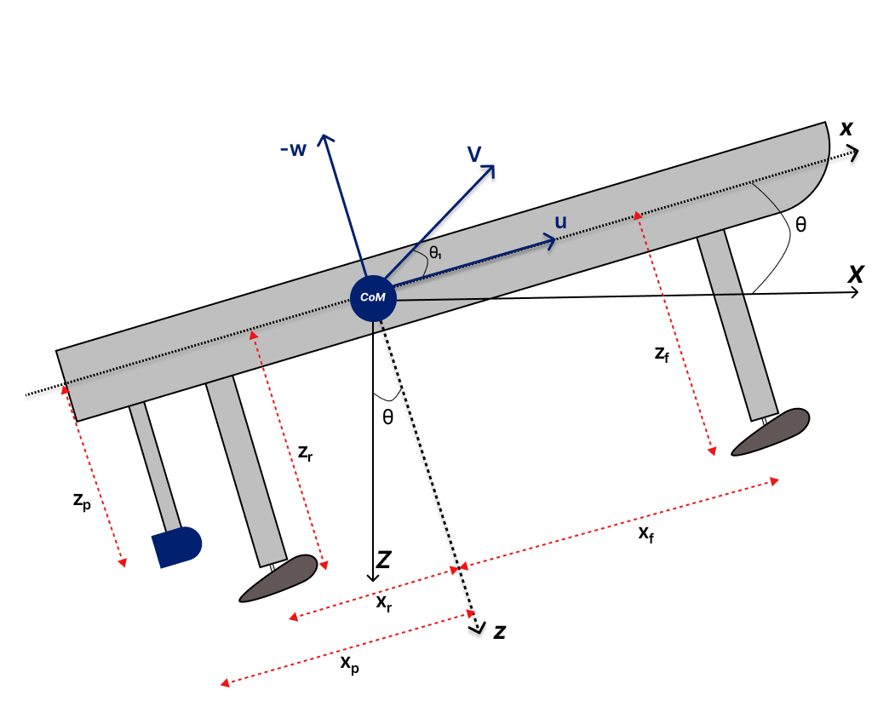
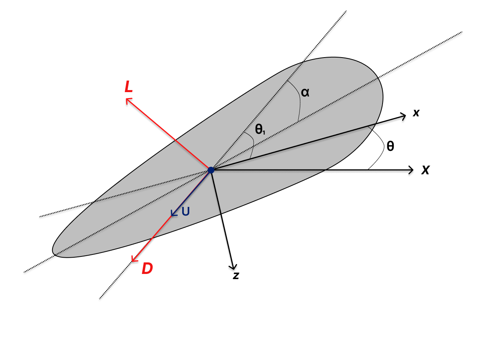
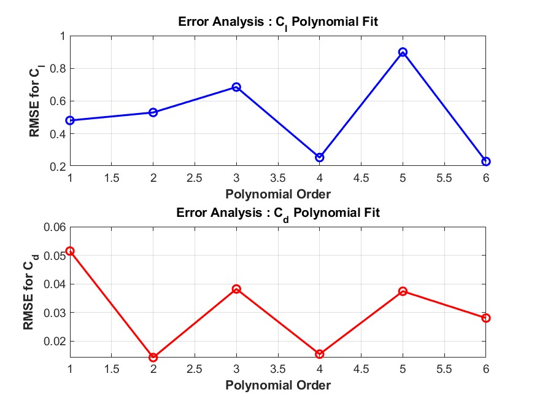
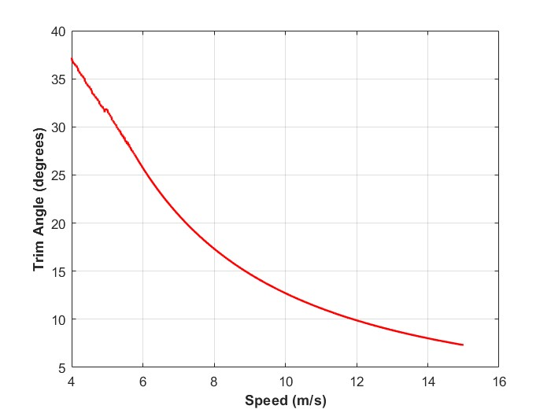
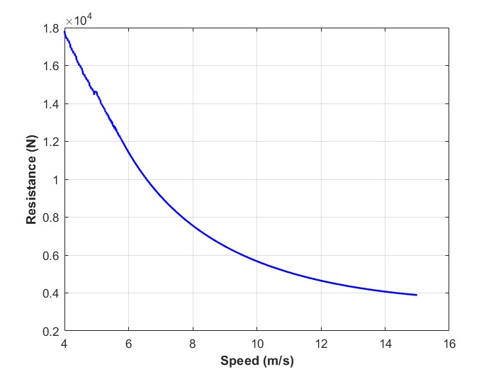
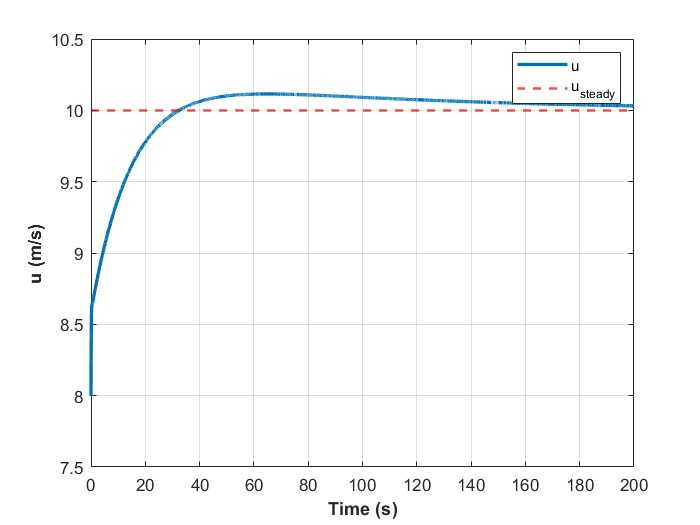
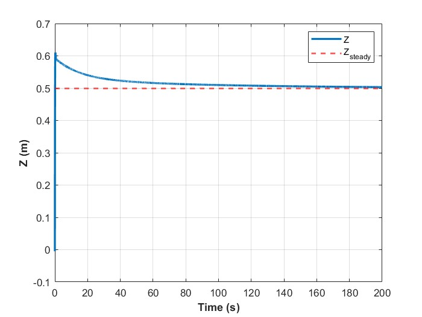
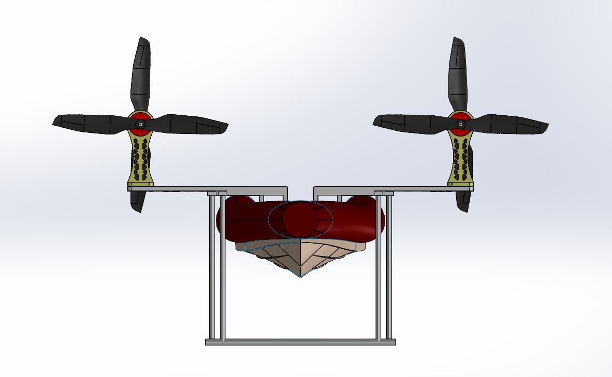
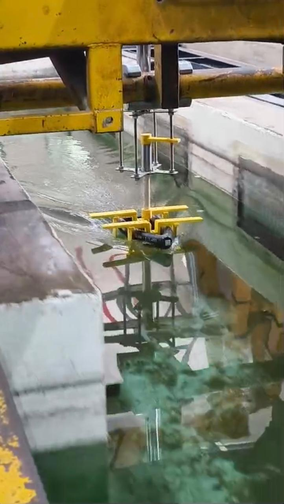

Led a team through the complete lifecycle of a hydrofoil vessel - from foil geometry optimization and 3-DoF dynamics modeling through LQR-based active ride control to physical manufacturing and testing. The work was published and presented at ASME OMAE 2025.

Conventional displacement hulls face a fundamental speed limitation: as velocity increases, wave-making resistance grows dramatically. Hydrofoils solve this by lifting the hull clear of the water at speed, but this introduces a new challenge - maintaining stable flight above the surface requires active control of the foil angle of attack in real time.
This project addressed both the design optimization (choosing the right foil geometry for maximum lift-to-drag ratio) and the control problem (keeping the vessel stable in foilborne mode).
The foil geometry was optimized for the target operating speed and vessel displacement using MATLAB and low-order flow simulation. Key design parameters included foil span, chord, section profile, and strut configuration.


Before designing the foil system, the baseline hullborne performance was characterized using the Savitsky method. This established the trim angle and resistance curves that the hydrofoil system needed to improve upon.


An LQR (Linear Quadratic Regulator) controller was designed for active ride control, maintaining near-zero pitch angle and a target ride height of 0.5 meters. The controller modulates the foil angle of attack in real time based on heave and pitch state feedback.
The LQR was tuned to balance ride comfort (minimizing pitch oscillations) against actuator effort (preventing excessive foil deflections that could cause ventilation or stall).


In foilborne operation at 19.4 knots, resistance dropped from 7.47 kN (hullborne) to just 812 N - an 89% reduction. The vessel maintained approximately 0° pitch angle and stable 0.5 m ride height under the LQR controller, demonstrating the viability of the combined design-and-control approach.


This work was presented and published at the ASME International Conference on Ocean, Offshore and Arctic Engineering (OMAE) 2025 in Vancouver, Canada. The paper details the integrated framework for hydrofoil vessel design spanning geometry optimization, dynamics modeling, and LQR-based active ride control.
This academic work built upon foundations laid during my R&D internship at SAVTOA Software Technologies, where I consulted on the design of an autonomous hydrofoil catamaran. At SAVTOA, I developed predictive AoA control and optimized foil geometry that increased vessel speed by 87% and reduced drag by 35%. The preliminary design was adopted for the ongoing construction of one of India's first autonomous hydrofoil vessels.